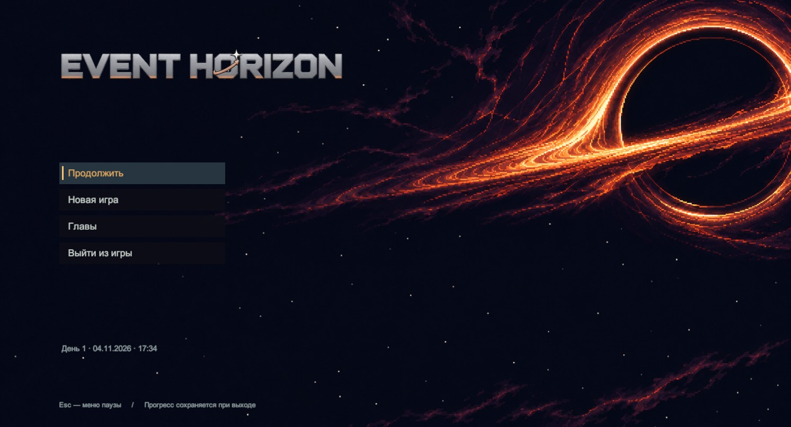

Event Horizon
«Горизонт событий» · Демоверсия первой главы

Станция ждёт экипаж
Откройте первую главу или сразу осмотрите станцию.
Загрузка игровых файлов…
Как играть
Нажмите на игровое окно, чтобы передать ему управление. В главе есть знакомство с экипажем, диалоги и задания. «Быстрый осмотр» пропускает вступление и открывает станцию для прогулки.
Для игры нужен компьютер с клавиатурой и браузер с поддержкой WebGL 2.
- A D
- Движение влево и вправо
- W S
- Подъём и спуск
- Shift
- Бег
- E
- Взаимодействие и продолжение диалога
- 1–5 G
- Выбор и бросок предмета
- Esc
- Пауза